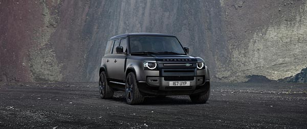

Carro Super potente, com design super top e com uma força e brutalidade de outro mundo

O preferido do Dubai
Carro Super forte, super lindo e moderno, e também, super amado pelos milionários do dubai
Contra esse não existe possível disputa...
Só o facto de ele ser toyota já lhe coloca no trono da competição

O Nome já diz tudo, esse carro tem tudo o que pode ser chamado de luxo e mais alguma coisa, ele é praticamente o luxo sobre rodas